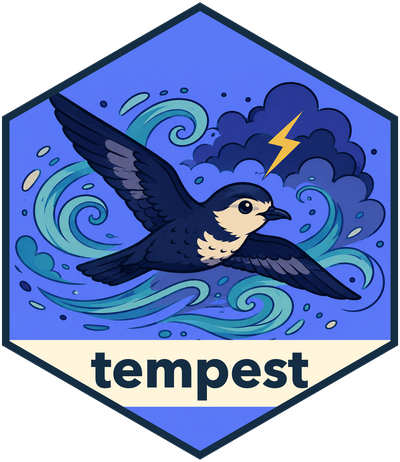

Research, review, retain, and reuse
Source:vignettes/ecosystem-demo.Rmd
ecosystem-demo.RmdTempest brings the Ellmerverse Plus packages together in a research workflow: deputy runs bounded agents, dsprrr executes typed scientific programs, shinymcp presents an exact result for inspection, and graft preserves reviewed evidence for another session. Tempest owns research state and scientific validation.
Tempest requires deputy 0.0.0.9002 or later. Research tools declare their actual effects: local evidence inspection is read-only and closed-world, adding a proposed claim changes only provisional research, and web retrieval also writes retrieved evidence to that workspace and is open-world. Neither operation is destructive. Moderator delegation can change provisional research and reach the web. The adapter allowlists its tools while keeping file access, shell and R execution, and package installation disabled. It does not override Deputy’s base permission checks. Plan mode refuses provisional claim writes, web retrieval, and delegation even when allowlisted. Readonly mode requires custom tools to be allowlisted; a host offering evidence inspection should allowlist only the read tools.
Try the complete workflow
Install the demonstration’s optional packages alongside Tempest:
pak::pak(c("JamesHWade/tempest", "JamesHWade/shinymcp", "JamesHWade/graft",
"shiny", "bslib", "callr"))
tempest::tempest_app(demo = TRUE)No model credentials or network requests are needed after installation. Scripted Chat responses and local synthetic evidence run through the actual deputy, dsprrr, and Tempest implementations. The demonstration proves composition and evidence integrity; it does not measure live-model accuracy, cost, or latency. The replay requests registered evidence tools through Deputy’s tool callbacks, so permissions are checked before those functions execute. Research, retention, and reuse run in background R processes so the interface stays responsive. Before acceptance, the worker restores the saved run and checks that its exact review identity still matches the candidate on screen.
- Inspect the initial report in the Research card. Open Evidence, choose the claim, and read its exact source quote, support judgment, and source locator.
- Check that you reviewed this candidate and give a reason. Accept reviewed research records a Graft decision for the complete report and evidence.
- Reopen in a fresh R process rechecks current acceptance, admits the evidence into a new Co-STORM session, and verifies exact source equality after save/resume.
- Research the corrected note consults the current accepted evidence and produces a separate 74% recovery candidate. The accepted 82% result remains current until you explicitly review and accept the correction.
- Withdraw retained research, then attempt reuse again. Reuse is refused; historical reports and the decision history remain readable.
Every number and scientific statement in the example is invented. The
source locators use example.org; no source is fetched from
that domain.
The default demo files live under R’s temporary directory. To keep the evidence and completed runs across R sessions, choose a local directory before launching:
options(tempest.demo_dir = "~/tempest-ecosystem-demo")
tempest::tempest_app(demo = TRUE)The demo is a trusted local, single-user application. Its eligibility
callback admits only accepted decisions from
local-demo-reviewer in the synthetic-pilot
stream for demo-briefing. This is a fixed example policy.
Applications with multiple users must bind their own authenticated
reviewer and current access policy.
Put your own research in a card
result <- tempest::tempest_run("Battery recovery at pilot scale")
card <- tempest::tempest_mcp_app(result)
shinymcp::preview_app(card)
# Serve in a compatible MCP client, or use mcp_endpoint() for deployment.
shinymcp::serve(card)The same constructor accepts a succeeded, quiescent Co-STORM session
after session$publish(). It reads the existing report,
evidence, and trajectory once. Subsequent research in that session does
not rewrite the card; build a new card to review a newer completed
product. Rendering or restoring a card never reruns research or records
acceptance. Each exact review gets its own MCP resource name, keeping a
host’s cached page consistent with the new report and claim tools when a
candidate changes.
Clients without interactive pages can use the same three read-only tools:
| Tool | Result |
|---|---|
review_tempest_research |
Compact summary, exact review identity, and claim index |
inspect_tempest_claim |
One claim and its exact source quotes, locations, and support assessments |
read_tempest_report |
The exact committed Markdown report |
The full rendered report and presentation tables travel as page metadata. The model gets a compact overview and can request the evidence it needs. Report rendering keeps safe Markdown elements and attributes, removes active HTML and embedded images, and suppresses links other than HTTP, HTTPS, and in-page anchors. The exact stored Markdown is unchanged.
In a Shiny host, create the card inside a render function:
output$research_card <- shiny::renderUI({
shinymcp::mcp_embed(
tempest::tempest_mcp_app(completed_research()),
tool = "review_tempest_research"
)
})Keep decisions in the host
The card is read-only. Acceptance, correction, and withdrawal use the existing Graft operations from a host control that binds the exact reviewed product, reviewer, purpose, and expected decision. A completed workflow or a positive verifier score does not count as a human review. Model tool annotations do not authorize an application effect.
store <- graft::graft_store("research-evidence", create = TRUE)
selection <- tempest::tempest_publish_artifact_research(result, store)
# Called only after the host reviewer checks this exact candidate.
decision <- graft::graft_accept(
store, graft::graft_read_selection(store, selection), "pilot",
expected = NULL, key = "review-1", actor = "authenticated-reviewer",
reason = "Reviewed source evidence", purpose = "research-briefing"
)
knowledge <- tempest::tempest_reuse_artifact_research(
store, "pilot", decision@id, "research-briefing",
eligible = function(event) host_can_consult(event)
)Use the decision observed when the review began as
expected. Refresh and review again if a newer decision
makes that basis stale. The demo resets its review checkbox when the
candidate or review basis changes. A correction is a new proposal with
an exact input basis; acceptance is never automatic.
Verify the composition
From a package checkout:
testthat::test_local(
filter = "^(tools|deputy-adapter|costorm-deputy|ecosystem-contracts|mcp-app|ecosystem-demo)$"
)These deterministic checks exercise Deputy permissions, actual
moderator and expert delegation, Deputy execution, and dsprrr stage
identities, both model and page reads, exact claim evidence, stale
acceptance, proposal/acceptance separation, correction with accepted
input, a fresh-process restart, historical reads, and refusal of cached
acceptance after withdrawal. The supported CI lane installs the
dependency revisions pinned in DESCRIPTION; a separate
upstream lane checks current default branches without changing the
supported set.